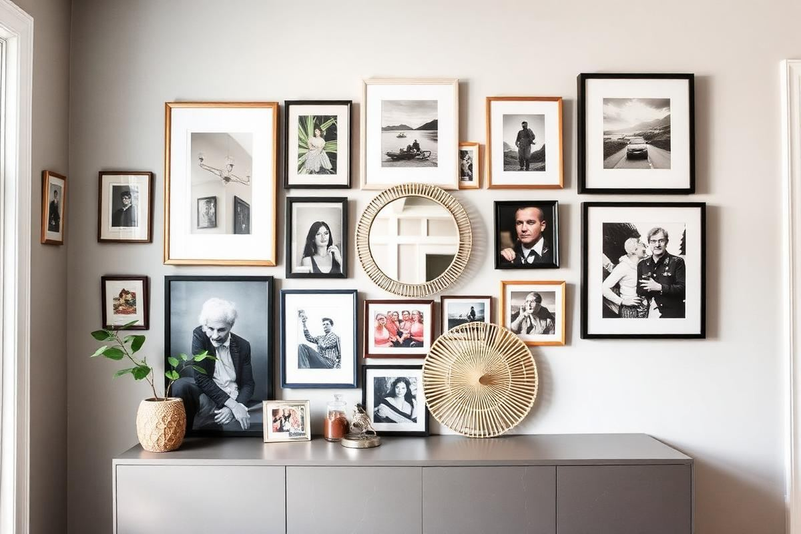

How to Plan a Gallery Wall (Without Regret)

How to Plan a Gallery Wall (Without Regret) is one of those topics where a little planning goes a long way. In this guide I walk through the process we use in real homes — not just what looks good in a photo, but what actually holds up over time.
Start here
Before you buy or move anything, measure the space and note how you actually use it. The best-looking room is one that matches how you live, so start with the routines: where you sit, where you drop keys, where the light falls in the afternoon.
The essentials
Focus on the pieces that do the most work. Get those right and the rest of the room comes together with much less effort. Aim for materials that patina rather than degrade, and colors you will still like in five years.
- Choose one clear focal point per room.
- Pick materials that improve with age.
- Layer textures instead of adding more colors.
- Leave visual breathing room — negative space is a design element.
Common mistakes
The mistakes we see most often are matching everything too tightly, over-scaling accessories, and skipping proper lighting. Fix those three and most rooms improve overnight.

Style Cohesion Is Key
Before you even think about drilling, consider your home's existing aesthetic. A well-executed gallery wall doesn't fight the room; it elevates it. For a minimalist or Scandinavian-inspired space, focus on clean lines, simple frames (think matte white or natural wood), and a limited color palette. Black and white photography or abstract line drawings work beautifully here. If your home leans bohemian, mix in distressed wood frames, woven textiles, and perhaps a small mirror or two amidst your artwork. A maximalist home, on the other hand, embraces a riot of color, varied frame styles, and even three-dimensional objects like small sculptures or vintage plates. The goal is to create a dynamic display that feels intentionally curated, not arbitrarily thrown together. Don't be afraid to pull colors or textures from other elements in the room, such as throw pillows or a rug, to create a subtle visual bridge.
Embrace Eclecticism (with a Plan)
While cohesion is important, a truly captivating gallery wall often incorporates a thoughtful mix. Varying frame styles can add visual interest, but aim for a common thread – perhaps all metallic, or all with a similar ornate detailing. Mix mediums too: add a small canvas painting alongside a framed print, or a vintage postcard collection. The key is balance; avoid a jarring hodgepodge. If you have a dominant color in one piece, try to echo it subtly in another. This creates a visual rhythm that guides the eye across the display rather than letting it jump haphazardly.
The Perfect Layout
Trial and error is your best friend when it comes to layout. Resist the urge to eyeball placement directly on the wall. Instead, cut out paper templates the exact size of each frame or object you plan to hang. Use painter's tape to stick these templates to your wall, experimenting with different arrangements. Step back frequently, even walking into an adjacent room, to assess the overall balance. A common mistake is grouping everything too tightly or spreading it too thinly. Aim for a visual flow. Consider a central anchor piece, perhaps the largest or most impactful artwork, and arrange smaller pieces around it. For a balanced, symmetrical look, ensure equal spacing between items (typically 2-4 inches). For a more organic, asymmetrical feel, vary the spacing slightly, but always keep a consistent visual weight.
Measuring for Success
Once you've finalized your paper layout, meticulously mark the top center point of where each hook will go directly onto the paper template. Then, measure the distance from the top of each actual frame to its hanging mechanism (whether it's a wire, D-ring, or saw-tooth hanger). Let’s say a frame is 12 inches tall and the wire hanger is 2 inches down from the top when pulled taut. You'd mark 2 inches down from your template's top center point. Transfer these exact points from the templates to your wall using a pencil. This precision ensures your frames hang exactly where you envision them, preventing crooked lines and unnecessary holes later.
Hanging Hardware: Smart Choices
The right hardware is crucial for a secure and long-lasting gallery wall. For most standard frames up to 10-15 pounds, a simple picture hook and nail (approximately $3-5 for a pack at a hardware store like Home Depot) will suffice. Opt for the brass-plated steel hooks for durability. If you have heavier pieces (15-30 pounds), consider using D-rings or cleat hangers ($5-10 each). They distribute weight more evenly and prevent sagging. For extremely heavy or oversized art (30+ pounds), locate wall studs and use appropriate fasteners like toggle anchors or stud screws ($10-20 for a pack). Never rely solely on drywall anchors for very heavy items unless they are specifically rated for significant weight and you are confident in their installation. If you're renting and want to avoid extensive wall damage, adhesive picture hanging strips (like Command strips, about $10-15 for a multi-pack) can hold surprisingly well for lighter frames (up to 12-16 pounds per pair).
Lighting and Maintenance
Good lighting is an often-overlooked element that profoundly impacts your gallery wall's presentation. Natural light is always ideal, but if your wall is in a darker area, consider adding dedicated picture lights. Battery-operated LED picture lights (starting around $20-30 each on Amazon) offer a versatile, wire-free solution and come in various finishes to match your frames. For a more integrated look, hardwired picture lights (professional installation recommended, $50-150+ per fixture) provide a seamless, elegant glow. Position lights so they illuminate the art evenly, avoiding harsh reflections or dark shadows. Overhead track lighting with adjustable spotlights can also be effective, allowing you to highlight specific pieces.
- Avoid direct sunlight: Prolonged exposure can fade artwork and damage photographs. Use UV-protective glass if displaying valuable or sentimental pieces (approx. $15-30 per pane).
- Dust regularly: Use a soft, lint-free cloth or a microfiber duster to prevent dust buildup on frames and glass.
- Check hardware periodically: Especially for heavier pieces, ensure hangers are still secure and no screws have loosened over time.
- Rotate artwork: If you have a large collection, periodically swap out pieces to keep the display fresh and prevent any single item from dominating for too long.
These routine checks will keep your DIY gallery wall looking its best for years to come.
Key takeaways
- Match the room to how you actually live.
- Anchor with one main piece and clear lighting.
- Layer textures, not colors.
- Leave breathing room around every object.
Frequently asked questions
Where should I start?
Start with the largest piece and the light. Everything else — art, textiles, small objects — is easier to place once those two anchors are set.
What is a realistic budget?
Prioritize the pieces you touch every day. Spend more on those and less on decorative items, which are easy to swap over time.
How long should this last?
A well-chosen main piece should last 10–15 years. Refreshes come through textiles, art, and accessories, not full replacements.

Sophia Bennett is a certified interior stylist and the senior editor at Styleire. She has spent more than eight years helping homeowners and renters create warm, functional interiors, with hands-on experience across small city apartments and family homes. Her work has been informed by close collaboration with independent designers, craftspeople, and product testers.
View full profile →Related reading

DIY Wall Art Ideas That Don't Look DIY
You don't need to paint to make wall art. Some of the best DIY pieces are almost entirely assembly.

Living Room Color Schemes That Age Well
Living Room Color Schemes That Age Well — a clear, editor-tested guide covering the essentials without the filler.

How to Paint Furniture So It Actually Lasts
How to Paint Furniture So It Actually Lasts — a clear, editor-tested guide covering the essentials without the filler.